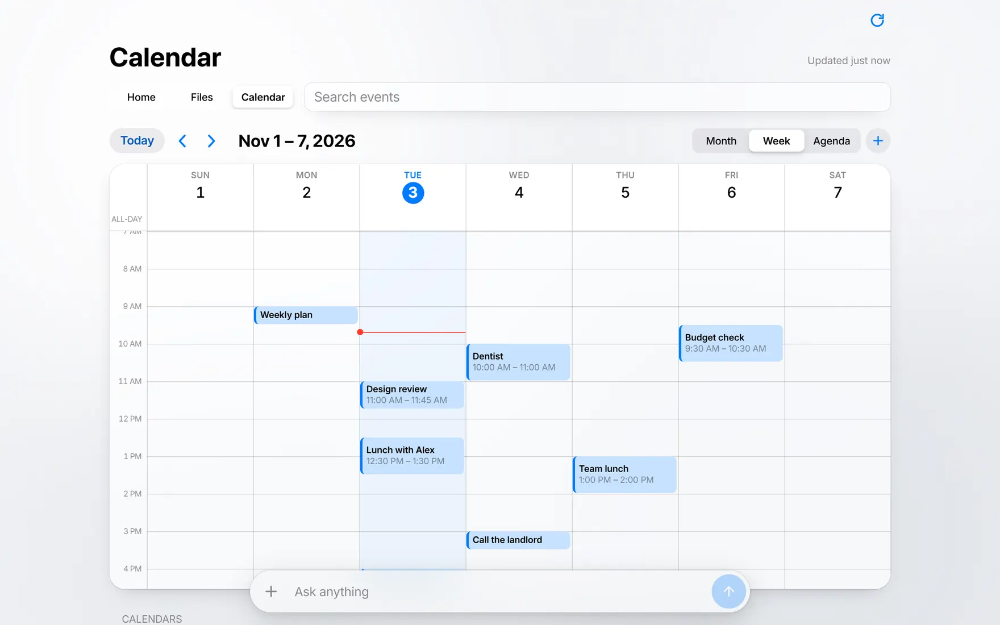

Calendar
Your own events, kept on your PC, next to a calendar you read from somewhere else.

Turn it on
Calendar is an add-on. It’s off on a new hub unless you gave a calendar link during setup. To turn it on, open Edit Tabs and switch on Calendar under Add-ons. The page reloads with a Calendar tab.
Use it
Choose Month, Week or Agenda, move with the arrows and press Today to come back. Press + to add an event with a title, location, start, end and notes, or tick All-day.
Right-click an event to edit, duplicate or delete it. Right-click a day for New Event… or New All-Day Event….
- Left Right
- Back and forward.
- T
- Today.
- N
- New event.
- M W A
- Month, week, agenda.
Read a calendar from elsewhere
During setup, the optional keys step takes a calendar name and a link to the calendar. Its events then show alongside yours. You can read them and copy their titles, but changes are made where that calendar lives.
These pages don’t cover adding a link after setup yet.
Find the link
- Google Calendar
- Open Settings, pick the calendar, go to Integrate calendar and copy Secret address in iCal format.
- Outlook on the web
- Open Settings, then Calendar, then Shared calendars. Under Publish a calendar, pick the calendar, choose Can view all details, press Publish and copy the ICS link.
- iCloud
- Press the share button next to the calendar, turn on Public Calendar and copy the link.
Messages you might see
- The event ends before it starts.
- Check the two dates.
- Check the start and end times.
- One of the times isn’t a real time.
- Couldn’t load: …
- LocalHub couldn’t fetch that link. The rest of the message says why. Your own events are still there.